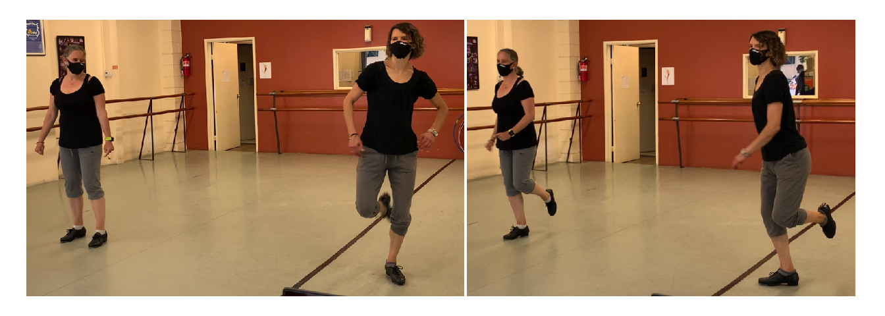
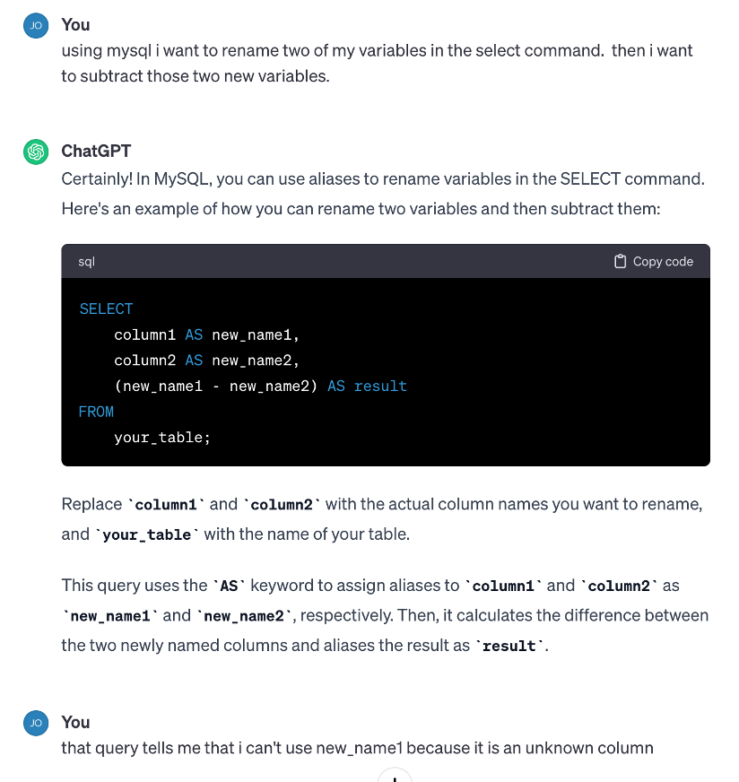
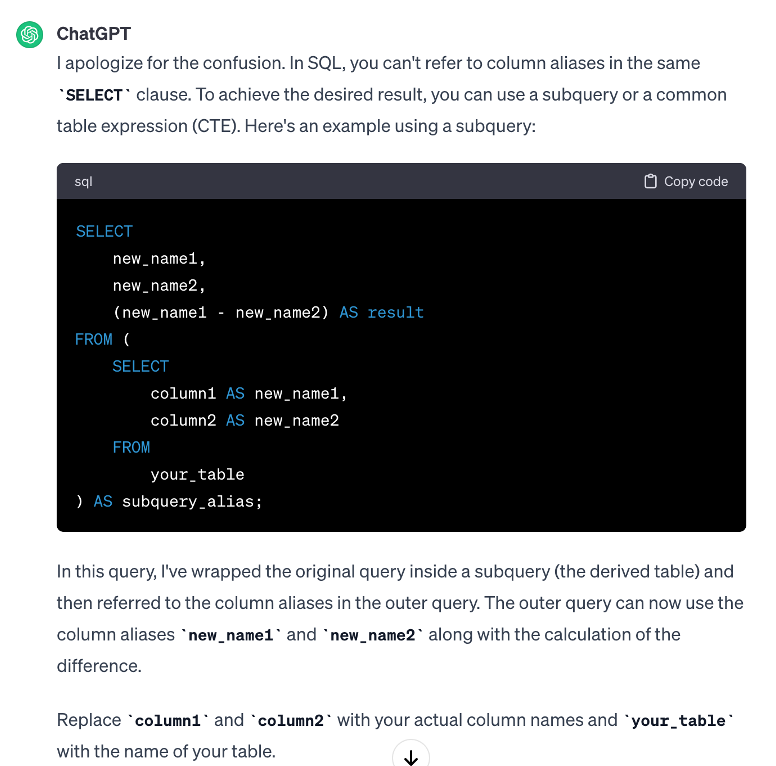

Learning is humbling… and necessary for educators
Through two recent pursuits, I reflect on what it is like to be a student. When I’m in a tap dancing class that is too hard for me, I find it hard to focus on what I’m supposed to be learning. When I try to learn SQL I recognize the power of generative AI. I’ve been teaching for 22 years, and it is refreshing and humbling to be in the student role again. I recommend that all educators find a way to put themselves in the student role. It will make you a better teacher.
Association for Women in Mathematics
The following entry originally appeared in the 2024 March-April Newsletter for the Association for Women in Mathematics.
Let’s start with what we all know: learning is hard. It takes effort, practice, and focus. As educators, we want our students to work harder and to work smarter. We have a laundry list of ways in which they can be more effective in their learning: put in the hours, go through more questions, come to office hours, talk in community about the problem set, … But when was the last time you learned something new? I mean really new? When was the last time you attempted to learn something unfamiliar? In such a way that you didn’t even know the tools that would help you put in the effort, the practice, and the focus? When was the last time you were a student?
Lately, I’ve taken up a few new challenges that have given me an enhanced perspective on learning. The adventures have humbled me greatly, but even more importantly, they’ve given me a window into the strange and daunting student experience.
Tap dancing
While maybe not fair to consider it as a “new experience” (I’ve danced on and off since I was young), the first novel adventure I’d like to discuss is a tap class (that’s right, tap dancing). Bluntly, the class is out of my league. Everyone else in the class either studies or teaches dance professionally (I’m a statistician). It is the “advanced” class, and it moves quickly both in terms of the steps as well as the music. Most weeks, I leave class close to tears. You might be wondering: why do you go? Because I love tap dancing, and I love the challenge. You might be wondering: why are you close to tears? Let me tell you about the Shim Sham.
The Shim Sham is not a difficult tap dance. In fact, it is considered tap dancing’s national anthem. All different levels of tap dancers know and perform the dance regularly at competitions, performances, and generally anywhere tap dancers gather. But I don’t know the Shim Sham. I’ve never learned the Shim Sham. In my class, each week we dance the Shim Sham exactly once as part of the warm-up. I’ve caught on to about ⅔ of it, for some of it I can fumble through, and for some of it I just stand and watch my peers dance. One day in class, my teacher expressed that our class would be dancing (with other classes) the Shim Sham at the upcoming recital. No way am I going to dance the Shim Sham in front of other people. I don’t know the Shim Sham!
When we dance the Shim Sham in class, I get incredibly frustrated. Quite a few thoughts contribute to that sentiment. I think a lot about how I should know the Shim Sham because it is a reasonably easy dance. I think about how I’m in an advanced class, where everyone already (expectedly) knows the Shim Sham. I also wonder whose responsibility it is for me to learn the Shim Sham? If the class is advanced, does that mean I’m supposed to learn the Shim Sham on my own? Or is it the teacher’s responsibility to teach me the Shim Sham because she is the TEACHER? Doesn’t she notice that I always stop halfway through and look around because I don’t know the steps? If it is my responsibility to learn the Shim Sham on my own, how do I learn it? An internet search shows many different variations on the Shim Sham, different enough to make it difficult to learn the version we dance in class. And the videos I can watch online don’t really teach the Shim Sham, they just show people dancing.
All of this gets my brain really focused, again, on how I don’t know the Shim Sham. And I’m frustrated with the teacher, I’m disappointed at the lack of resources for learning the Shim Sham, and most of all, I feel terrible about myself because I don’t know the Shim Sham. And guess what? At this point in class, ten minutes later, we’ve moved on to something else with the majority of my brain space being taken up by my feelings of inadequacy. When I refocus, I have no idea what the teacher is explaining. I find myself completely lost, and now there are new tap steps being covered that I don’t know. The learning has continued without me. Sigh. Figure 1 shows two versions of me as a tap dancer: one lost and one confident.
Fortunately for me, the class is only an hour per week and nothing about my livelihood depends on my learning the Shim Sham. I don’t actually have to take the final exam (that is, dance in the recital), and I get to choose how much I want out of the experience. Still, my discomfort leaves me thinking a lot about my students and how they experience learning when they feel similarly inexperienced, unqualified, and/or distracted by the plethora of other things occupying their own brain space, sometimes rendering them unable to fully engage with the class. Unfortunately, for them, usually, learning in my classroom matters.
SQL
The second adventure I’ve embarked on recently is learning SQL (a programming language primarily used to access and wrangle data from large databases). I offered to teach a two week intensive short course on SQL, partly to force myself to engage with it. Before embarking on learning SQL, I had used SQL a few times, and it also has similarities to a programming language with which I am very familiar (wrangling data using the tidyverse in R). So I thought that learning SQL couldn’t be that hard. But learning a new tool to use and learning a new tool to teach are two completely different tasks.
In R, a data frame is a compilation of individual observations we can investigate as a complete object (for example, we can easily determine how many rows and columns it has). In SQL, the datasets can be large enough that they aren’t easy to treat as an object to examine. While it may seem like a minor distinction, many of the data wrangling skills I have previously developed fall short when working with SQL tables. Consequently, I’m led to question my background preparation for learning SQL. That is, I thought SQL would build from my R skills, but instead, I find myself needing different skills. As a mere beginner, I am challenged with the daunting task of understanding the larger structure in which SQL and R are different and similar.
Like the Shim Sham, I am also lost when it comes to using resources to determine what I need to know to successfully prepare my curricular materials. Recently I spent a few hours doing internet searches to figure out a reasonably basic SQL task. I wanted to rename a variable in the SELECT command and then take the difference between the two variables. After multiple dead-end searches, I asked ChatGPT, which happily and confidently provided me with the wrong answer. However, because I had been reading help forums for hours, I immediately knew that ChatGPT was wrong and what the SQL error would be. I explained the problem to ChatGPT which apologized and proceeded to give me exactly the answer I was looking for. It took ChatGPT and me, working together, about 20 seconds to get to the correct answer. It probably would have taken much longer if I hadn’t already spent the hours reading many posts on how to solve SQL problems. Figures 2 and 3 show my “conversation” with ChatGPT.


Learning SQL has helped me reflect on how hard it is to learn how to learn a new idea. I ask myself whether I am efficiently using tools at my disposal. For example, what is the best way for me to understand the role of variables in a SQL table? Are the internet searches only surface level learning, or am I getting a deeper understanding by beating my head against the wall for hours? How do I learn how to learn smarter? How do I teach how to learn smarter?
Does ChatGPT help me understand SQL or does it just help me solve the specific problem I need to know? To be honest, in my very specific example, I think that ChatGPT did help me understand SQL more deeply than I had before. After seeing the correct answer, I finally understood the difference between a variable in the original dataset and a variable in the results set. Our students use ChatGPT in all the aforementioned ways. As educators, we need to embrace its use and recognize that it can sometimes help the learning process. Yes, yes, of course, it can also hinder the learning process. But before casting judgment about ChatGPT, perhaps you might try learning something completely new where it might be useful. Work on the new idea for hours or days or weeks. And then switch to using generative AI. Reflect on how your learning changes and whether your learning is more superficial, deeper, correct, or incorrect. All of the above? Know that your students are learning in the same way you are learning, and your job remains the same, even in a new world of generative AI: to teach.
Lessons
I thought I was embarking on two quests: to learn some tap dancing and some SQL. Enough, at least, to dance in the recital and to teach others SQL with some semblance of confidence. Along the way, I learned a lot about being a student (again). It is extremely refreshing and frustrating to be on the other side, with very little knowledge of the content or the system.
We as educators should continue to learn. There are new ways to learn, which students are utilizing (i.e., ChatGPT). We should not shy away from them. Instead, I encourage interacting with and understanding such new tools so they can be at our disposal, too.
As I gear up to teach again in a few weeks, I’ll try to implement some of the lessons that I’ve learned as a renewed student and longtime educator. In particular, I plan to:
- pay attention. What are the signs that a student is struggling or not following the material?
- talk to the students. Ask them how I can best support their learning. Ask them where they get stuck. Ask them what their in-class experience is like. Ask them what they’d like to get out of the class.
- be flexible. Recognize that I’m teaching a range of students with a range of different backgrounds and experiences who are all trying to accommodate my teaching style. I’ll try to meet them half-way, how can I achieve the same rigor of instruction while allowing them leniency?
- be approachable. Look for ways to make students feel empowered in their resources, advocacy, and access to help.
- discover what success means to my students. For some, success will mean complete mastery of the nuanced details. For others, it will mean passing the class. Or it might be for them to figure out how to apply the ideas to the outside world. Understanding what a student wants to get out of the class will allow me to be a better teacher to their desired learning outcomes.
Learning is humbling, because it is frustrating, hard, and consistently reminds us what we do not know. But learning is also rewarding and provides us the ability to continuously expand our knowledge. Students grapple with such conflicting sentiments every day in our classrooms. Once in a while, it’s useful for us educators to remind ourselves of them, too. Sometimes, the best way to help our students is to once again, be a student.
My journey isn’t done. Part of the joy of being an academic is that I can be a life-long learner. At this moment, I don’t have to know everything or to be the perfect teacher. But I do need to think about ways I can continue to improve and grow, and facilitate the same for my students. In that light, I remind myself of the things I’m still learning, including:
- how different students engage differently with the material, the classroom, and college in general;
- how to use generative AI to enhance student learning; and
- of course, how to dance the Shim Sham.